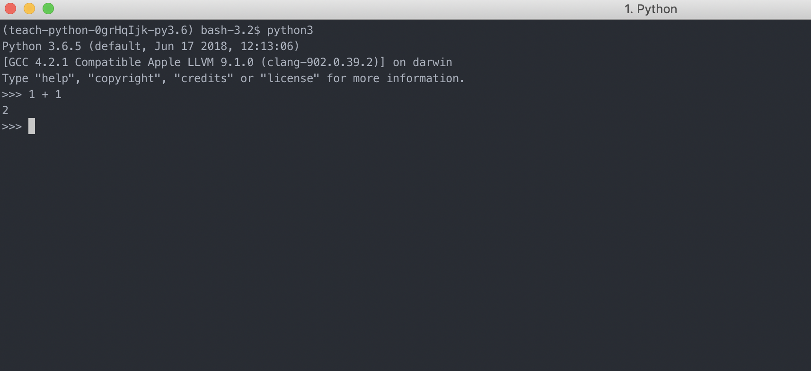
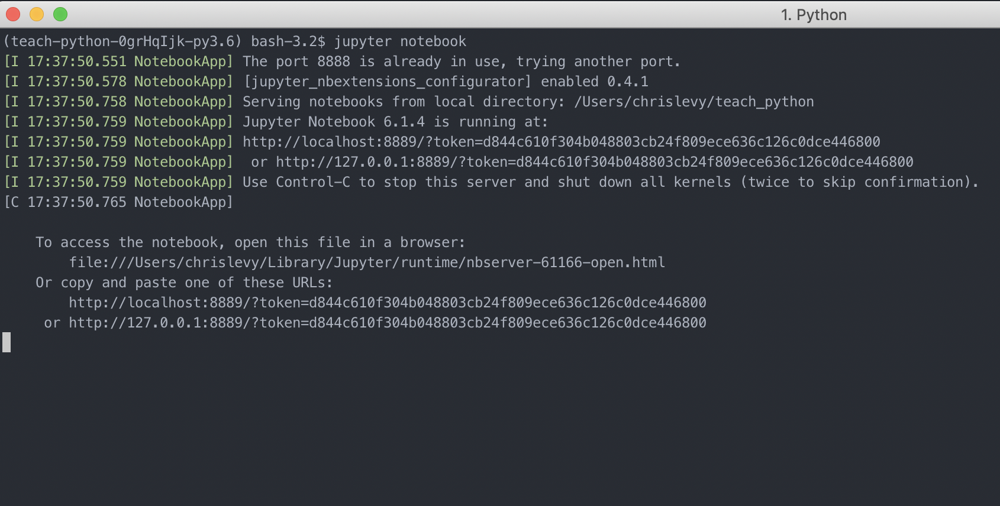
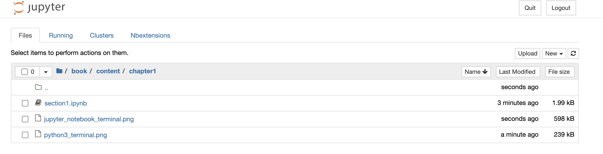
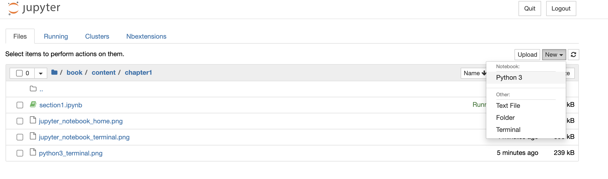
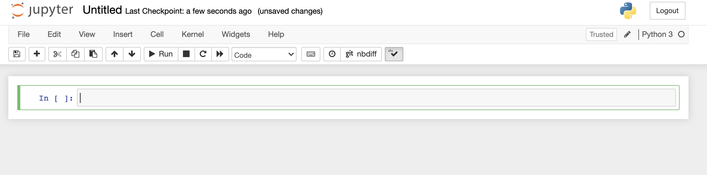
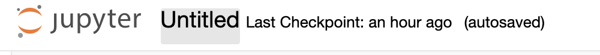
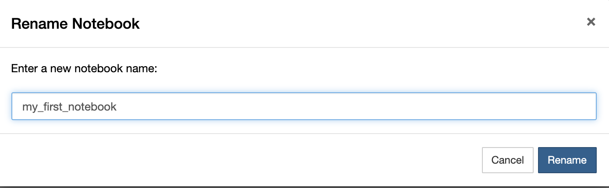
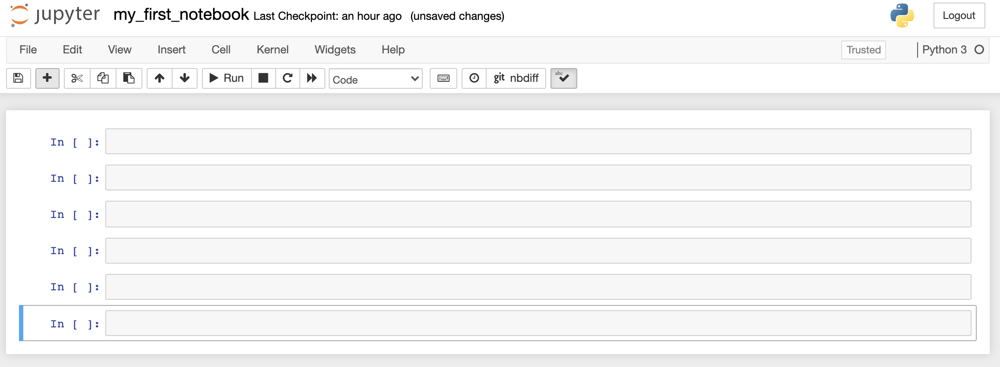

Intro to Interactive Python¶
When you code in Python, you end end up writing lines of code across lots of different files. It is very common for larger Python projects to have thousands of lines of code. But when you are first starting to code, it is ideal to write some lines of code and then see what they do instantly. This experience is interactive and is ideal for learning and playing around with Python.
There are couple of ways to start interactive sessions with Python.
For example, if you have Python installed on your computer you can open
up a terminal/shell and just type python or python3. Here is an example of
what that looks like. 
Each line starts with >>> and you can simply type some
python code and then hit return on your keyboard to execute it.
Here I typed 1 + 1 and then hit return.
Then the code was executed instantly and the output was displayed on the screen, 2.
Try it out on your own! Open a terminal/shell and type python3.
Then try adding two numbers together.
You can type quit() and then return to exit the interactive python shell in the terminal.
Another way to work in python in a very rich interactive environment is by using
Jupyter Notebooks. If you have Jupyter installed you can just open
a terminal/shell on your computer and type jupyter notebook and hit return on the keyboard.

You can copy and paste the link http://localhost:8889/?token=d844c610f304b048803cb24f809ece636c126c0dce446800 in your web browser. Or it might even open automatically. In the web browser you will see something like this: 
You can click on the button new on the right and then click on Python 3 as shown here.

This will open up a blank Untitled Jupyter Notebook (also called Ipython Notebook).

You can change the name of the notebook file by clicking on the title at the top and typing a new name.

This will open up a window like this. Type the new name and then click Rename.

A notebook is made of individual cells in which you can type python code in. You can add more cells by clicking on the + sign on the left beside the save button. Here I clicked it 5 times which created 5 new cells.

Let’s start to learn some python! Click on the first cell and type the following code in the first cell. After typing your code in a cell you can hit shift plus return on your keyboard to execute the code in that cell. Or you can click the button Run on the top tool bar but it’s better to use the keyboard shortcuts.
1 + 1
2
Trying creating some more cells and typing some mathematical expressions in them. Don’t forget to execute the code. In Python we can use the following symbols for addition, subtraction, multiplication, and division:
+ for addition
- for subtraction
* for multiplication (shift + 8 on the keyboard)
/ for division (the forward slash on the key with the ? symbol)
1 + 2 + 3 + 4 + 5
15
105 - 100
5
6 / 3
2.0
9 * 9
81
5 + 9 * 9
86
5 + 9 * 9 - 100
-14
3 * 3 + 6 - 9/3
12.0
4/5
0.8
5/4
1.25
Notice that Python obeys the standard mathematical order of operations. That is, multiplication and division come before addition and subtraction.
For example the proper way to do,
is to do
which is
which is
The wrong order of operations would be to first calculate \(2+3\) which is \(5\) and then do \(5 × 4\) to get the incorrect answer \(20\). Python executes the correct order of operations.
2 + 3 * 4
14
When writing complicated mathematical expressions in Python code it’s really useful to make use of brackets. Just like you do when writing math on paper. For example you might work out this on paper as:
In Python, to work out this exact same math problem you must you brackets.
(10 + (5 * 5) - (50 / 5)) * 2
50.0
Print Function and Displaying Results in Jupyter¶
Consider the following simple code in Python. Do not worry if you do not quite understand what it does. We will explain more later. Go ahead and create a new Jupyter Notebook and name it printing_in_python. In the first cell type this Python code and then execute the cell by pressing shift and return on the keyboard together.
x = 1
y = 2
What happened? You may be thinking that nothing happened because
no results were printed or displayed to the screen.
Well in reality, something did happen. Those two lines
of code were executed in Python. It’s just that nothing
was printed or displayed. Now add a third line to the code,
x + y, and then execute the cell.
x = 1
y = 2
x + y
3
Interesting, it printed the output 3.
Now change the third line, x + y to z = x + y and
then execute the code. Did anything get printed or displayed? Nope!
Why do you think that is?
x = 1
y = 2
z = x + y
Finally, add one more line of code like this:
x = 1
y = 2
z = x + y
z
3
It printed/displayed the number 3!
Typically, python programs do not print any output to the screen unless you tell them to. But when working in Jupyter Notebooks, the ouput of a single cell will sometimes be displayed. Only the output of the last line of code executed in the cell can be displayed. Sometimes nothing will be displayed at all.
For example, here are five lines of code. Write this out
in your Jupyter Notebook. Notice that only the last line, 5,
is displayed on the screen.
1
2
3
4
5
5
In this next example though, nothing is displayed. Run this code to verify that is the case.
1
2
3
4
a=5
Do not worry about why or why not something gets displayed by Jupyter at the moment. Just know that,
Even if nothing is displayed, know that the code was still executed.
If any output is displayed, it will only be output from the last line.
You may be wondering how to print or display
any results from within a Python program or code.
Well it turns out you can do this with the print() function.
It’s very easy! Type the following in a cell.
print(1)
print(5 + 5)
print(10 / 5)
print(1 / 3)
1
10
2.0
0.3333333333333333
Now type this code in a cell. Before executing the code, try and guess what the output will be.
x = 1
y = 2
z = x + y
print(x)
print(y)
print(z)
1
2
3
In Python, you can print the result of some code
by simply wrapping it within the print() function.
We will learn more about functions later.
You have to use the opening ( and closing ) brackets.
If you do not, you will get an error like this for example.
We will learn more about Python errors later.
print 1
File "<ipython-input-21-c94594b6b28f>", line 1
print 1
^
SyntaxError: Missing parentheses in call to 'print'. Did you mean print(1)?
Spend some time printing some results on your own. Make up some simple math questions. Do them on paper and then check your work by printing the results using Python code in the Jupyter Notebook.